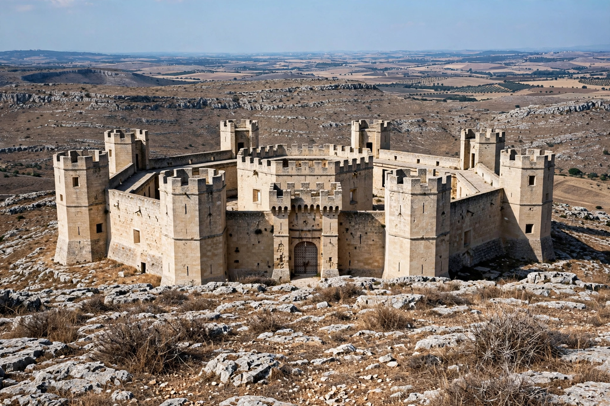

Castel del Monte, Apulia
From Wikipedia, the free encyclopedia
| Castel del Monte | |
|---|---|
 | |
| Location | Andria, Apulia, Italy |
| Built | c. 1240s (construction begun c. 1240) |
| Commissioned by | Frederick II, Holy Roman Emperor |
| Architectural style | Gothic, Classical, Islamic influences |
| UNESCO | World Heritage Site (1996) |
Castel del Monte (Italian for "Castle of the Mount") is a 13th-century citadel and castle situated on a hill in Andria in the Apulia region of southeast Italy. It was built during the 1240s by the Emperor Frederick II, who had inherited the lands from his mother Constance of Sicily. It has neither a moat nor a drawbridge and some consider it never to have been intended as a defensive fortress; its actual purpose remains debated.
Architecture
The castle is famous for its rigorous octagonal geometry: an octagonal prism core with an octagonal tower at each corner and an octagonal courtyard. The design is widely thought to reflect Frederick's interests in mathematics, astronomy and classical and Islamic learning; the number eight held rich symbolic associations, mediating between the square (earth) and the circle (heaven). The interior, robbed of its marbles and furnishings over the centuries — it served at times as a prison and a refuge from plague — preserves Gothic ribbed vaults, classical columns and traces of sophisticated plumbing.
History
After Frederick's death in 1250 the castle passed through Hohenstaufen and Angevin hands; the sons of Manfred were imprisoned there after the Angevin conquest that destroyed Conradin's cause. It declined over the centuries, was bought by the Italian state in 1876, and underwent restoration in the 20th century. UNESCO inscribed it as a World Heritage Site in 1996, praising it as a unique masterpiece of medieval military architecture reflecting Frederick's humanist vision. The castle appears on the Italian version of the one-cent euro coin. See also the Angevin dynasty that dispossessed its builders.